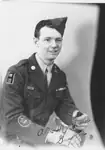
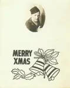
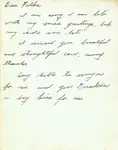

008 Jenkins Grafton and Dorothy
Pictures related to Grafton and Dorothy Jenkins. Grafton is a cousin of Mom's -- the second son of W.I. and Martha Jenkins.
← Return to Browns
brn008-00001
194x Dorothy Jenkins Snapshot. Dorothy Jenkins, wife of Grafton Jenkins.Updated: 9 Jun 2005

brn008-00002
194x Grafton Jenkins Signed Military Photo. Grafton Jenkins, son of W.I. and Martha (Brown) Jenkins.Updated: 9 Jun 2005

brn008-00003
Christmas card from (I think) Grafton Jenkins. That appears to be him in the picture.Updated: 7 May 2006

brn008-00003a
Christmas card from (I think) Grafton Jenkins, probably to Georgennea Renshaw. Date unknown.Updated: 7 May 2006
4 photos available in this directory.